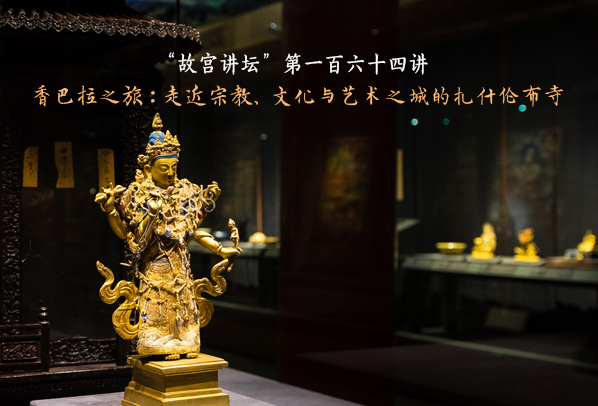

11月26日，“渤大学术讲堂”2025年第十九讲在滨海校区博闻楼BJ103举办。大连理工大学鲁渤教授为我校师生作了题为“国家基金项目的申请、评审与结题”的学术报告。报告会由管理学院院长靖飞主持。
报告中，鲁渤教授凭借国家基金项目申报与评审的丰富经验，重点围绕三个维度展开深入讲解。首先，他系统介绍了国家基金项目的申报类型、管理流程与时间安排，通过对比国家自科基金项目与国家社科基金项目的主要特点，指出自科选题注重“小而精”，强调微观科学问题的探索；社科选题则偏向“大而广”，聚焦中观层面的问题研究。随后，鲁教授详细讲解了国家自科基金项目的申请要点。他深入分析了函审过程中的五项核心评价指标，强调摘要撰写需要字斟句酌，体现“一字千金”的价值；研究内容应当注重逻辑连贯，形成从题目、摘要到关键词的有机整体。他还特别提醒申请人要准确区分“研究问题”“科学问题”“关键科学问题”与“创新点”之间的内在联系与差异。最后，鲁教授聚焦国家社科基金项目，系统阐述了选题策略与论证方法。他结合实例，讲解了学术史梳理、选题价值论证、研究框架构建、研究方法选择等关键环节的写作要领，并对预期成果呈现和参考文献选取提出了具体建议。他还分享了项目申请中常见的误区与改进策略，为与会教师提供了前车之鉴。在互动交流环节，鲁教授进一步强调了“学习优秀案例”和“精益求精修改”的重要性。
整场报告内容翔实、逻辑清晰，既有理论高度又具实践价值，不仅加深了师生对国家基金项目的理解，也为教师开展项目申报工作提供了明确指引，对加强学院科研队伍建设、促进高水平成果产出具有积极意义。
鲁渤，大连理工大学经济管理学院教授、博士生导师，民革党员，教育部长江学者特聘教授、交通运输部科技创新“领军人才”、国家社科基金重大招标项目“首席专家”、国家自然科学基金重点项目负责人。现担任中国物流学会副会长，长期致力于智慧航运与港口运营领域的教学科研工作。近年来，他先后主持国家社科基金重大招标项目、国家自然科学基金重点项目等12项国家级科研课题，取得了丰硕的研究成果。
上一篇:“渤大学术讲堂”2025年第十八讲蒋建伟教授作学术报告
下一篇:没有了